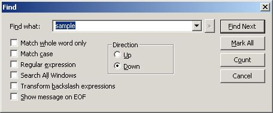

Search -> Find...
Top
Next
Find the specified character or string in the current document or in all opened windows. Use the proposed options to search up or down, match case, find regular expressions...
